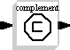

Scicos Complement Block.

This block compute the following fuzzy complement class:
One
Yager
Sugeno
The user can select the complement class and set the parameters in the usual set sequence.
Jaime Urzua Grez
Holger Nahrstaedt